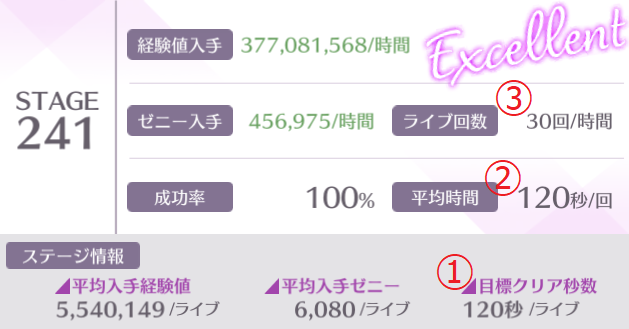

各ステージに設けられている①[目標クリア秒数/ライブ]以内で15回連続成功すると ②[平均時間/回]が最短になります。
その状態の③[ライブ回数/時間]を【理想回数】と表記しています。 プロデュース画面の[ライブ回数/時間]と照らし合わせて下さい。
なお、ステージ61(理想回数=3600/110=32.7272...)の集計において、 回数は切り捨ての方に収束しているため、このサイトでは割り切れない【理想回数】を切り捨てで計算しています。
| ステージ | 理想回数 |
|---|---|
| 260～ | 27 |
| 150～259 | 30 |
| 61～149 | 32 |
| 56～60 | 34 |
| 51～55 | 36 |
| 46～50 | 39 |
| 41～45 | 41 |
| 36～40 | 45 |
| 31～35 | 48 |
| 26～30 | 52 |
| 21～25 | 58 |
| 16～20 | 64 |
| 11～15 | 72 |
| 6～10 | 81 |
| 1～5 | 94 |